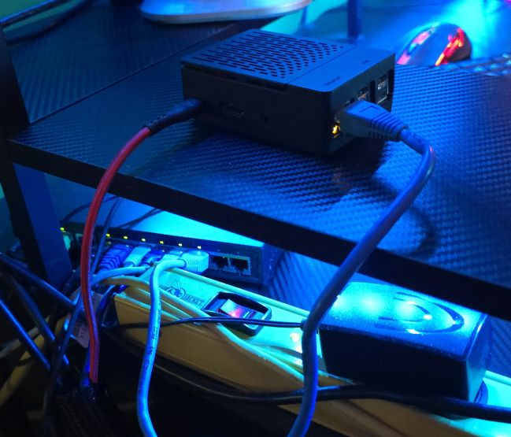
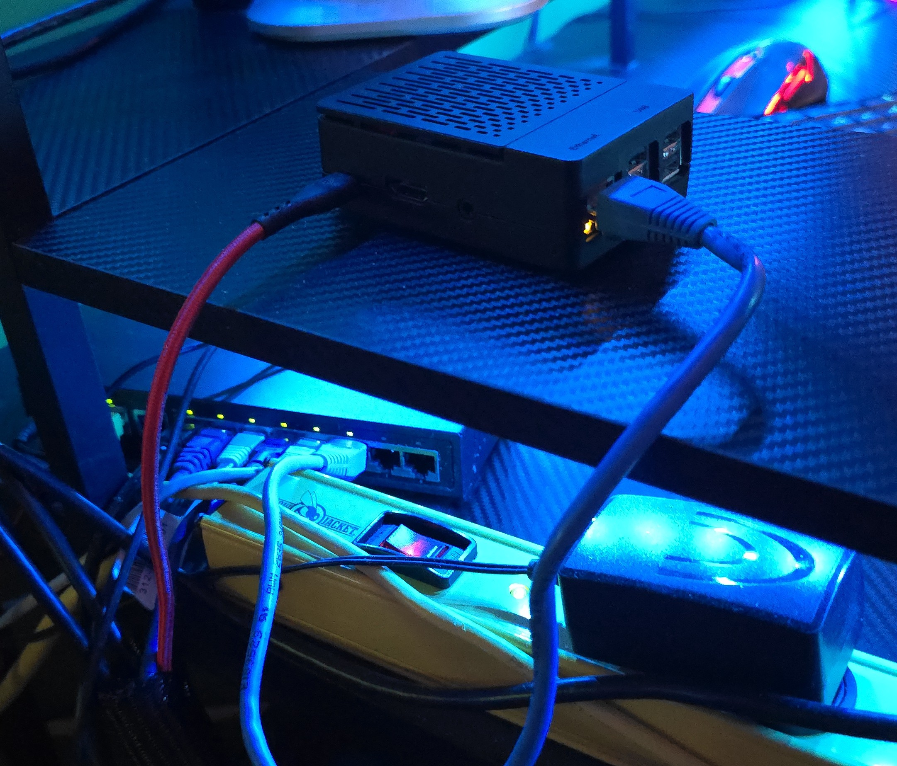

My Network
In my room, I have my own router as I kind of do quite a bit of stuff and my parents didn't want me messing with
the main router or causing reboots. I also only needed it to give my devices static IP addresses, so I didn't mind
using my own.
On the router, there is a redstone lamp from Minecraft. This is actually an NFC tag I programmed to allow devices to connect
to my wifi without the password. This is useful for my friends when they come for the first time. The "SMG-SMP" is the logo to
my first hosted Minecraft Server.


Switch & Raspberry Pi Tunnels
As you can see in the image, I have a LOT of devices hooked up. That's just the wired! I also have my phone, tablet, some laptops,
power meters, and more attached. This router is hauling butt over here!
Unfortunately, my ISP uses CGNat, which means I can't publicly forward the ports to my services. But thanks to Cloudflare and Playit.gg
I can make some tunnels and sneak around those rules. This method of forwarding even masks my IP, so I don't need to worry about DoS/DDoS attacks!
So What Are These Tunnels?
I use Cloudflare's Cloudflared service to tunnel all my http traffic. This also makes my traffic support https automatically, so I don't even
need to bother setting that up for each new site I make. Some of the things that run on this tunnel would be Grafana's stat monitoring, my Minecraft
servers' live maps, development sites, and any other web content.
Where Cloudflared lacks though is raw TCP/UDP traffic. This is needed for all my hosted games servers. That's where Playit.gg's tunneling comes in. It works
pretty much the same as Cloudflare, but with a ton more customizability. I also use this tunnel for voice chat.
VPN For The Win!
I also use Cloudflare's Warp VPN on the Raspberry Pi. Using a custom email, I'm able to authenticate a session and log in as if I were in my room!
I'm able to connect to all my local devices as the Pi, and Warp forwards it to me. This allows me to access all my network drives, desktop consoles,
and any other kind of sensitive network traffic remotely without publicly forwarding them through a tunnel.
My File Browser's password is a lot easier to guess than my email and 2FA app auth code. Plus, outside of here, they'd need to know I'm using Warp in the first place.
Then after I get the notification someone signed in, then they can finally try to password guess, which I'll probably have shut down the Pi by then.
Very convienent, and very secure!